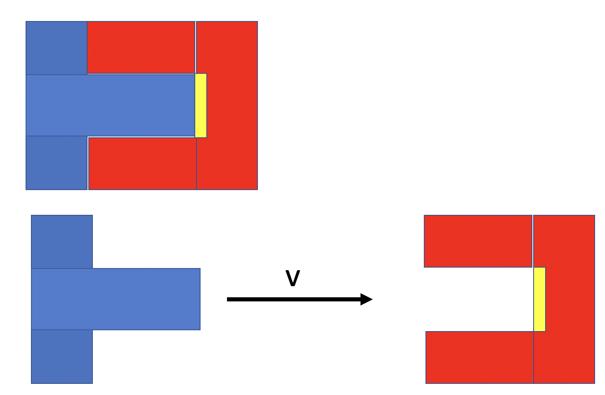

Forrige side🙂 🙁Relativistisk bevegelsesmengdePADLET
Har du lyst til å sove dårlig om natta! Da kan du ta en kikk på dette “paradokset” (det er faktisk ikke et paradoks, bare ser slik ut) som også er utenfor pensum:

Her ser du to innretninger, en blå og en rød. Øverst ser du de sammen og nederst så står den røde stille og den blå har høy hastighet rett mot den røde. Den gule boksen på den røde innretningen er en utløser for en bombe. Hvis den blå innretningen trykker på denne utløseren eksploderer bomben. Merk at i figuren øverst så er de ikke nærme nok til at bomba eksploderer. Tuppen av den blå må komme enda lenger inn. Husk lengdekontraksjon: når vi ser et legeme har en gitt hastighet så blir lengden av dette legemet mindre!. Hvordan ser dette ut fra blått sitt referansesystem? Blir ikke rød da kortere og blå kan komme inn og utløse bomben? Og fra rødt sitt referansesystem? Blir ikke da den blåe enda kortere og kan ikke klare å utløse bomben? Blir bomben utløst eller blir den ikke? Sorry, du får ikke svaret her...